Sustantivos
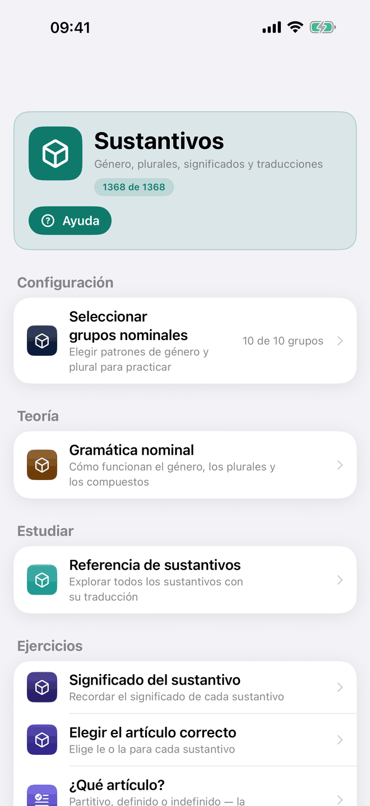
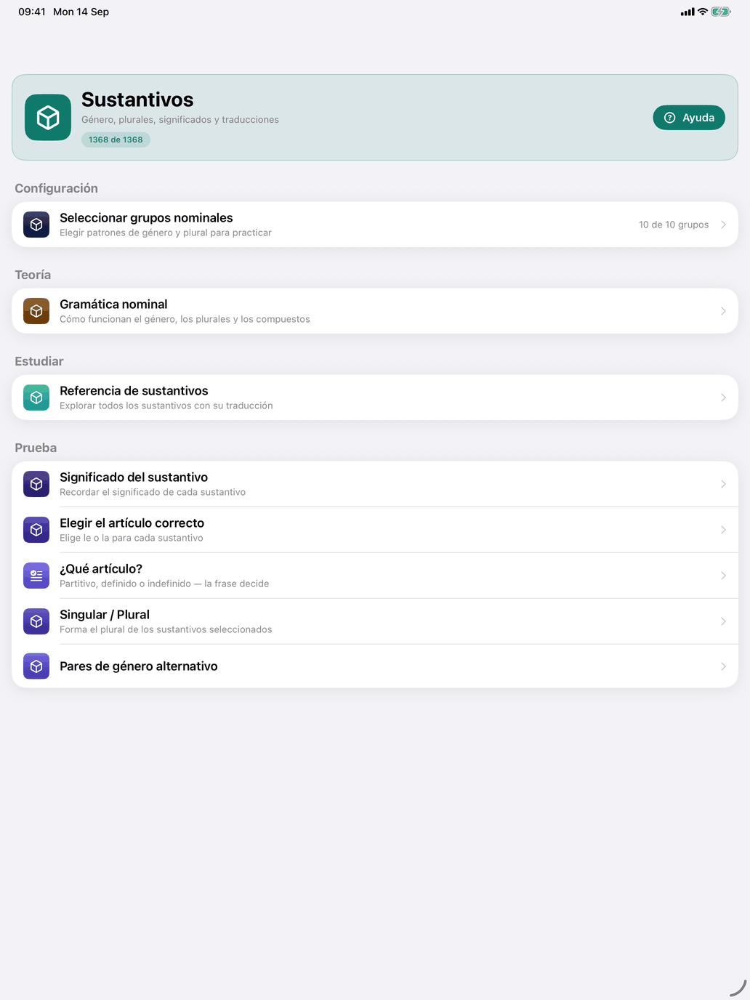
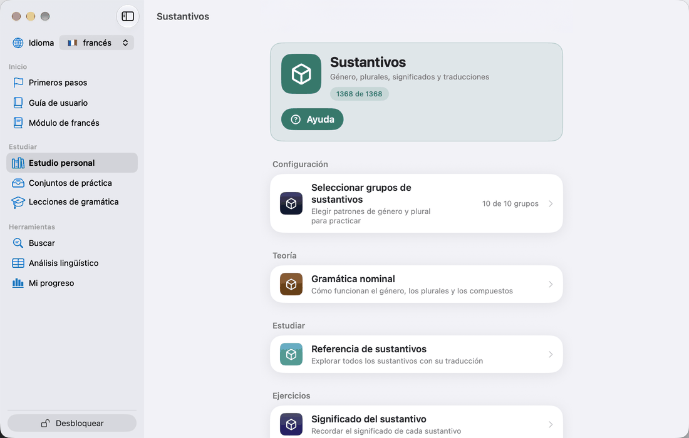
El curso de francés tiene más de 1400 sustantivos. Cada sustantivo tiene su género, su plural (cuando lo tiene), una traducción y tres oraciones de ejemplo. La sección Sustantivos es donde practicas las partes del vocabulario nominal que provocan más errores: el género (le o la), los plurales y los sustantivos que tienen forma masculina y femenina.
Abre Estudio personal → Sustantivos para llegar a la sección. Tiene cuatro apartados:
- Teoría — Gramática nominal: cómo funcionan el género, los plurales y los compuestos.
- Estudiar — Referencia (Referencia de sustantivos): consulta todos los sustantivos con su traducción.
- Práctica — Seleccionar grupos (Seleccionar grupos de sustantivos): elige qué tipos de sustantivos practicar. Después los ejercicios:
- Significado (Significado del sustantivo) — tarjetas: recuerda qué significa cada sustantivo.
- Elegir el artículo correcto — elige le o la para cada sustantivo.
- ¿Qué artículo? — elige el artículo que necesita una oración: definido, indefinido, partitivo o de solo.
- Singular / Plural — forma el plural (o el singular) de los sustantivos seleccionados.
- Pares de género alternativo — da la forma masculina o femenina de un sustantivo.
La línea bajo el título de la sección indica cuántos sustantivos te da tu selección, del catálogo completo. La fila Seleccionar grupos indica cuántos de los grupos de tu nivel has marcado; el número se vuelve rojo si no hay ninguno marcado. Mantén pulsada casi cualquier fila para ver una breve explicación, o usa el botón Ayuda en la parte superior de la sección.
Qué ejercicios siguen tu selección. Significado del sustantivo, Elegir el artículo correcto y Singular / Plural usan los sustantivos de los grupos seleccionados, acotados por tu nivel y los temas que ajustes en Estudio personal → Seleccionar ámbito de palabras. Pares de género alternativo usa siempre todos los sustantivos que tienen forma masculina y femenina. ¿Qué artículo? usa su propio conjunto fijo de oraciones. Referencia de sustantivos muestra siempre el catálogo completo.
Un flujo de trabajo recomendado
- En Seleccionar grupos, empieza con Regular y pon tu nivel en A1 en Esquema y nivel (toca la bandera). Ajusta Preguntas por sesión a 20 en Ajustes → Estudiar.
- Practica Significado hasta dominar el vocabulario básico y sus artículos.
- Añade Elegir el artículo correcto para fijar le y la en la memoria, y ¿Qué artículo? cuando llegues al partitivo.
- Pasa a Singular / Plural y luego añade en Seleccionar grupos los grupos de formación del plural.
- Deja Pares de género alternativo para cuando domines los géneros habituales.
Seleccionar grupos de sustantivos
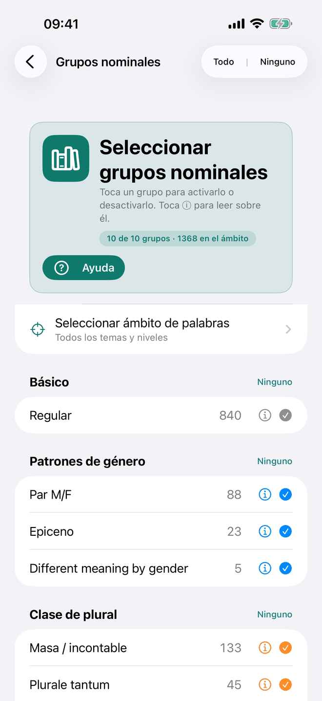
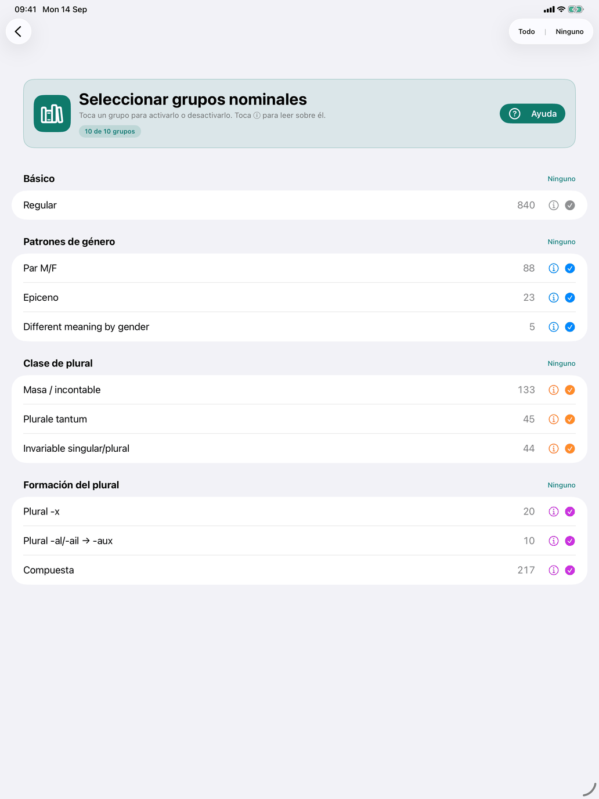
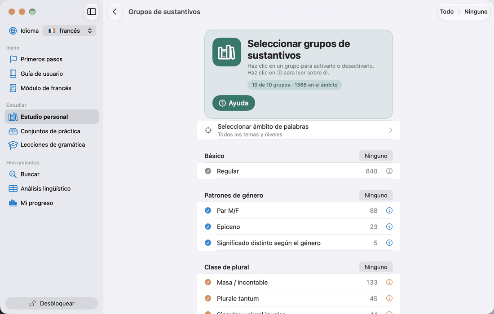
Seleccionar grupos de sustantivos decide qué sustantivos pueden aparecer en Significado del sustantivo, Elegir el artículo correcto y Singular / Plural. Los sustantivos se agrupan según su comportamiento gramatical, no según el vocabulario. El nivel y el tema se aplican a todos los tipos de palabra: el nivel en Esquema y nivel (toca la bandera), los temas en Estudio personal → Seleccionar ámbito de palabras; en Estudio personal no hay filtro de frecuencia.
Los diez grupos se reparten en cuatro apartados:
- Básico — Regular: un solo género, plural en -s y nada más que aprender. Es con diferencia el grupo más grande; un sustantivo solo está aquí si no pertenece a ningún otro grupo.
- Patrones de género — Par M/F (una forma masculina y una femenina: boulanger / boulangère, chien / chienne), Epiceno (una sola forma para ambos géneros; solo cambia el artículo: un élève / une élève) y Significado distinto según el género (el género determina el significado: le tour es una vuelta, la tour es una torre).
- Clase de plural — Masa / incontable (sin plural en el uso normal: le lait, le courage), Plurale tantum (solo en plural: les affaires, les gens) y Singular y plural iguales (la misma forma en ambos números: le bras / les bras, le choix / les choix).
- Formación del plural — Plural en -x (bateau → bateaux, jeu → jeux, genou → genoux), Plural -al/-ail → -aux (animal → animaux, travail → travaux) y Compuesta (sustantivos de varias palabras o con guion: salle de bains → salles de bains).
Un sustantivo puede pertenecer a varios grupos a la vez, y está en tu selección si cualquiera de sus grupos está marcado.
Uso de la pantalla
- Toca la fila de un grupo para incluirlo o excluirlo. Cada fila indica cuántos sustantivos contiene.
- Toca ⓘ en una fila para abrir la página informativa del grupo: qué abarca y un ejemplo. En los grupos más pequeños también muestra los sustantivos que pertenecen a él.
- Todo y Ninguno, en la parte superior, seleccionan o borran todos los grupos a la vez; cada encabezado de apartado tiene sus propios botones Todo / Ninguno.
- Un grupo sin marcar puede mostrar una nota como "12 aún en el ámbito vía Regular": esos sustantivos ya están en tu selección a través de otro grupo que has marcado.
- La línea superior indica cuántos grupos has marcado y cuántos sustantivos te dan dentro de tu ámbito de palabras. La fila Seleccionar ámbito de palabras te lleva al filtro de temas.
- Si sales de la pantalla sin ningún grupo marcado, la aplicación te avisa de que los ejercicios de sustantivos estarán vacíos. Elige Quedarse y seleccionar o Volver de todas formas.
Selección y tamaño de sesión son dos cosas distintas. Tu selección es el conjunto de sustantivos que pueden aparecer en un ejercicio. El tamaño de sesión es cuántas preguntas hace una sesión: Preguntas por sesión en Ajustes → Estudiar (10, 20, 30, 50 o ∞ para seguir hasta que pares).
Gramática nominal
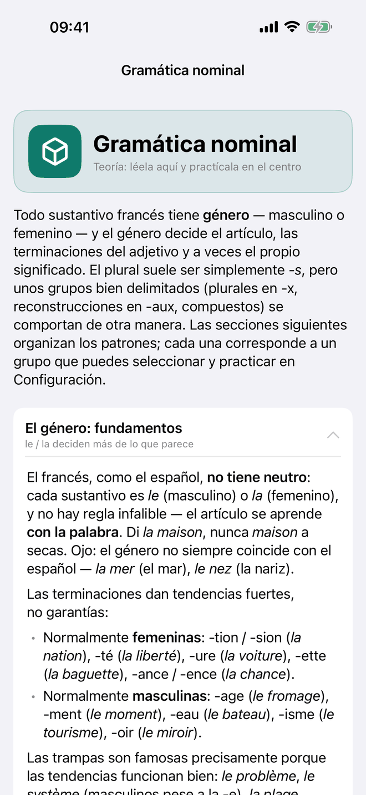
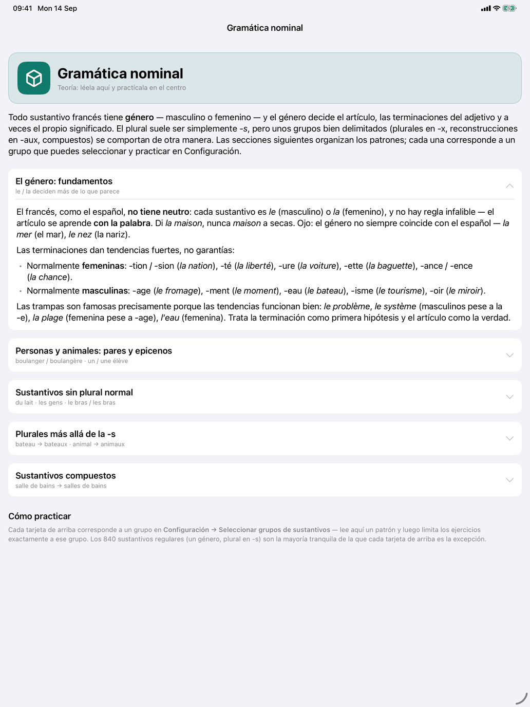
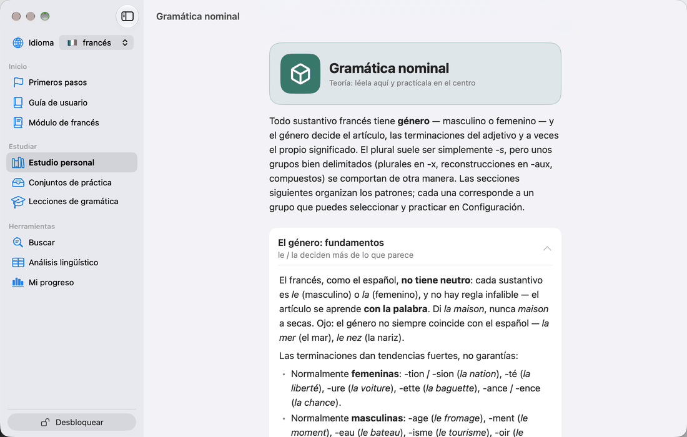
Gramática nominal es una página de consulta: no se evalúa ni se registra nada. Cada apartado corresponde a uno o más grupos de Seleccionar grupos de sustantivos, así que puedes leer sobre un patrón y luego limitar los ejercicios exactamente a ese grupo.
Género. El francés no tiene neutro: todo sustantivo es masculino (le) o femenino (la), y ninguna regla los abarca todos, así que aprende el artículo junto con la palabra — la maison, nunca solo maison. Las terminaciones marcan tendencias claras, no garantías:
- Normalmente femeninos: -tion / -sion (la nation), -té (la liberté), -ure (la voiture), -ette (la baguette), -ance / -ence (la chance).
- Normalmente masculinos: -age (le fromage), -ment (le moment), -eau (le bateau), -isme (le tourisme), -oir (le miroir).
Las excepciones son famosas precisamente porque las tendencias son fiables: le problème, le système (masculinos pese a la -e), la plage (femenino pese a -age), l'eau (femenino). Toma la terminación como una primera suposición y el artículo como la verdad.
Personas y animales. Los sustantivos del grupo Par M/F suelen formar el femenino con un sufijo (boulanger → boulangère, chien → chienne, acteur → actrice) y, a veces, con una palabra distinta. Los del grupo Epiceno usan una sola forma para ambos géneros, y el artículo hace todo el trabajo: un artiste / une artiste. Un pequeño grupo cambia de significado según el género: le tour (vuelta) y la tour (torre), le voile (velo) y la voile (vela). Equivocarse de artículo ahí cambia lo que has dicho.
Sustantivos sin plural normal. Los sustantivos de masa se quedan en singular y llevan el partitivo (du lait, du courage) en lugar de un número. Los plurale tantum solo existen en plural (les gens). Los sustantivos que ya terminan en -s, -x o -z no cambian (le nez / les nez); solo el artículo indica el número.
Plurales más allá de -s.
- -eau, -au y -eu toman -x: bateau → bateaux, jeu → jeux. También lo hacen siete sustantivos en -ou — bijoux, cailloux, choux, genoux, hiboux, joujoux, poux; todos los demás sustantivos en -ou toman -s (trou → trous).
- -al y algunos sustantivos en -ail rehacen la terminación como -aux: animal → animaux, travail → travaux. Excepciones como bal → bals y festival → festivals toman una -s simple.
En el habla nada de esto se oye — bateau y bateaux suenan igual. El plural se oye en el artículo: le / les.
Sustantivos compuestos. El plural recae en las partes que son sustantivos o adjetivos, no simplemente al final: salle de bains → salles de bains, arrière-grand-père → arrière-grands-pères, chef-d'œuvre → chefs-d'œuvre. Los verbos y las palabras invariables dentro del compuesto no cambian: un porte-monnaie → des porte-monnaie.
Referencia de sustantivos
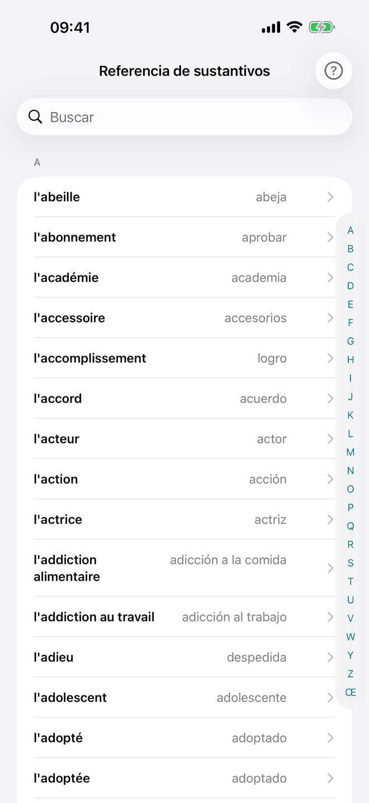
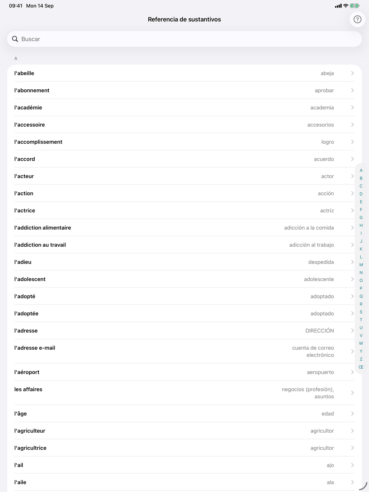
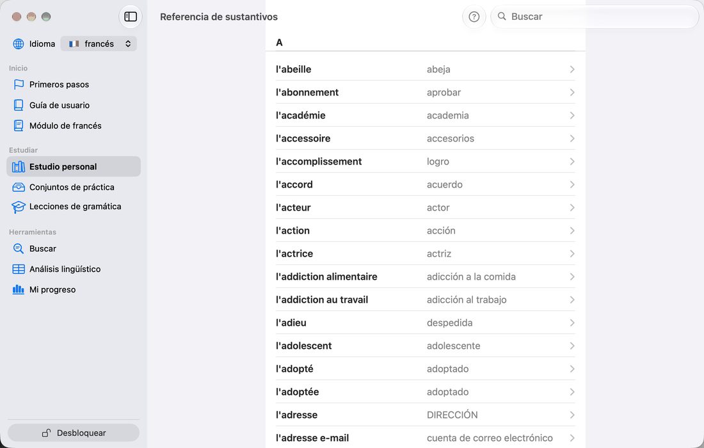
Referencia de sustantivos es una lista solo de consulta: no se evalúa ni se registra nada. Muestra el catálogo completo de sustantivos, no solo tu selección, así que un sustantivo nunca desaparece de ella por culpa de un filtro. Úsala para comprobar una traducción antes de una sesión o para buscar un sustantivo en el que te has equivocado.
La lista está en orden alfabético y tiene un campo de búsqueda; en iPhone y iPad hay un índice A–Z en el lateral. Cada fila muestra el sustantivo con su artículo y su traducción. Un par masculino/femenino como chien / chienne aparece en dos filas separadas, cada una con su propio artículo y significado.
La página del sustantivo. Toca un sustantivo para abrirla:
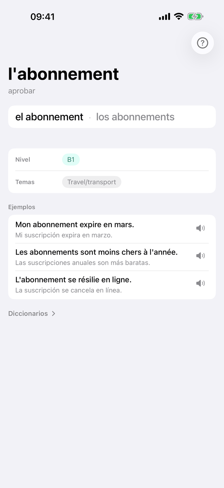
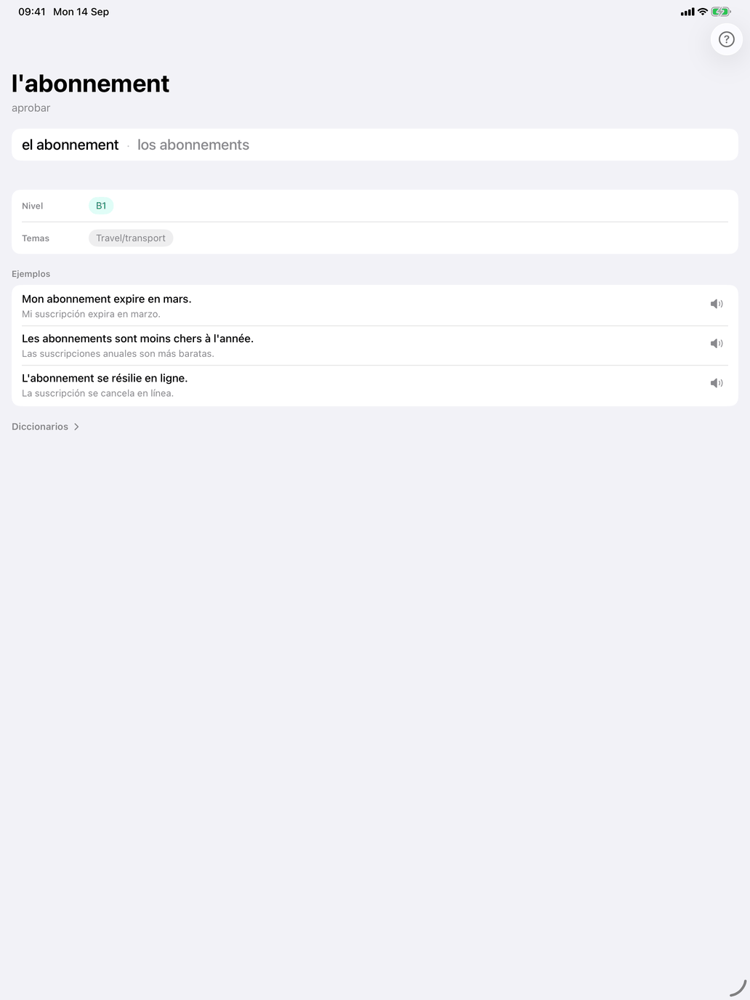
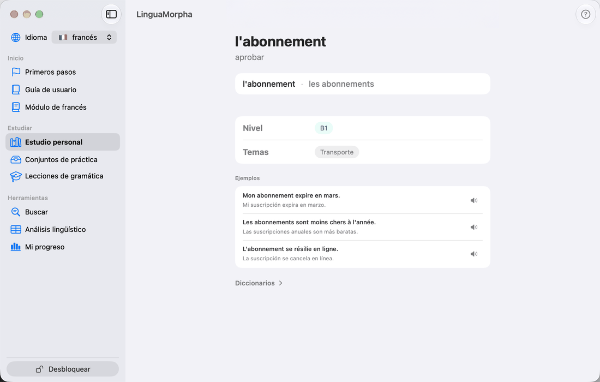
- el sustantivo con su artículo y su traducción
- sus formas de singular y plural
- su Nivel y sus Temas
- Ejemplos: oraciones en francés, cada una con su traducción y un botón de altavoz para escucharla
- el icono de libro de la barra de herramientas, para diccionarios en línea (consulta Búsquedas en diccionarios externos)
Significado del sustantivo
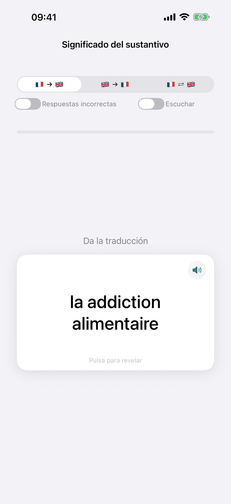
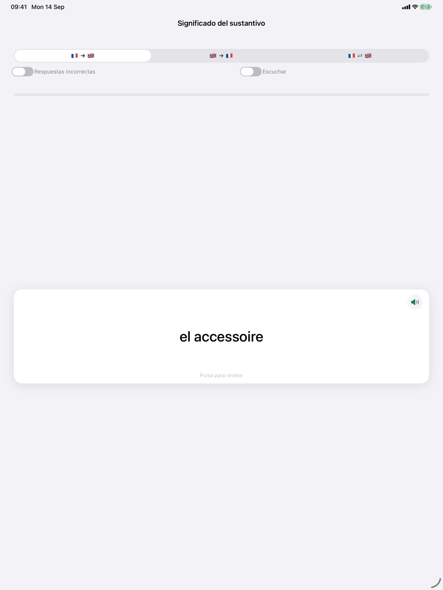
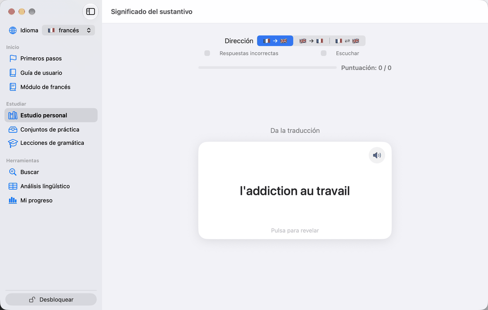
Un mazo de tarjetas para el significado de los sustantivos de tu selección. Cada sustantivo se muestra con su artículo, de modo que aprendes su género junto con su significado. Todas las respuestas se registran, y los sustantivos en los que fallas vuelven a aparecer con más frecuencia. Los demás mazos de significado del curso de francés (adjetivos, adverbios, pronombres, numerales, preposiciones, frases y otro vocabulario) funcionan igual.
Cómo funciona una tarjeta. La tarjeta muestra una palabra; recuerdas su traducción y luego tocas la tarjeta para darle la vuelta (Pulsa para revelar). En iPhone y iPad, desliza a la derecha si la sabías y a la izquierda si no. En un Mac (y con VoiceOver) se usan en su lugar los botones Correcto e Incorrecto. La siguiente tarjeta aparece automáticamente.
Los controles de la parte superior:
- Dirección — del francés a tu idioma, de tu idioma al francés o una mezcla aleatoria de ambas.
- Respuestas incorrectas — muestra solo las tarjetas que has respondido mal. Si no hay ninguna, la aplicación te lo indica y desactiva el filtro.
- Escuchar — cuando hay una voz francesa disponible, la cara francesa se pronuncia en lugar de mostrarse; dale la vuelta a la tarjeta para ver cómo se escribe.
El botón de altavoz de la tarjeta lee en voz alta la cara visible. Tras una racha de siete respuestas correctas, la aplicación te ofrece terminar la sesión antes: elige Detener — sesión completada o Continuar. Al final, Nueva sesión inicia otra ronda.
Elegir el artículo correcto
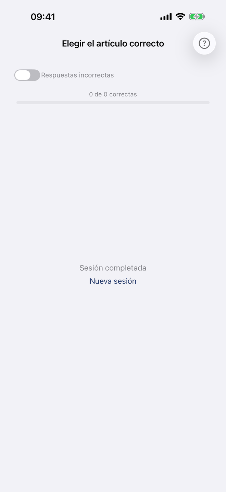
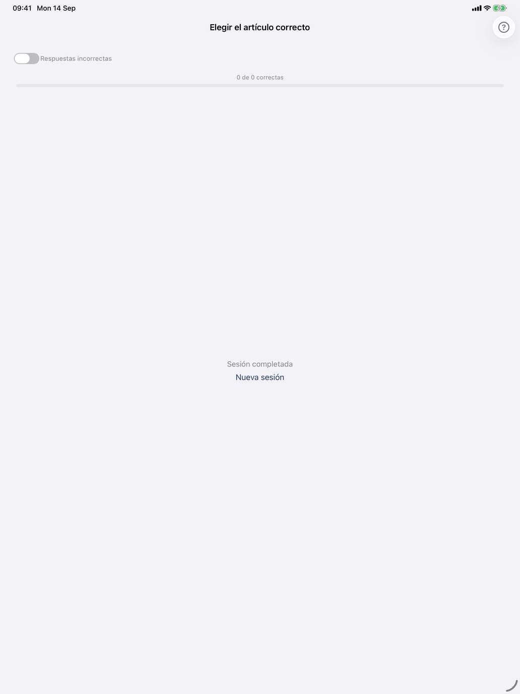
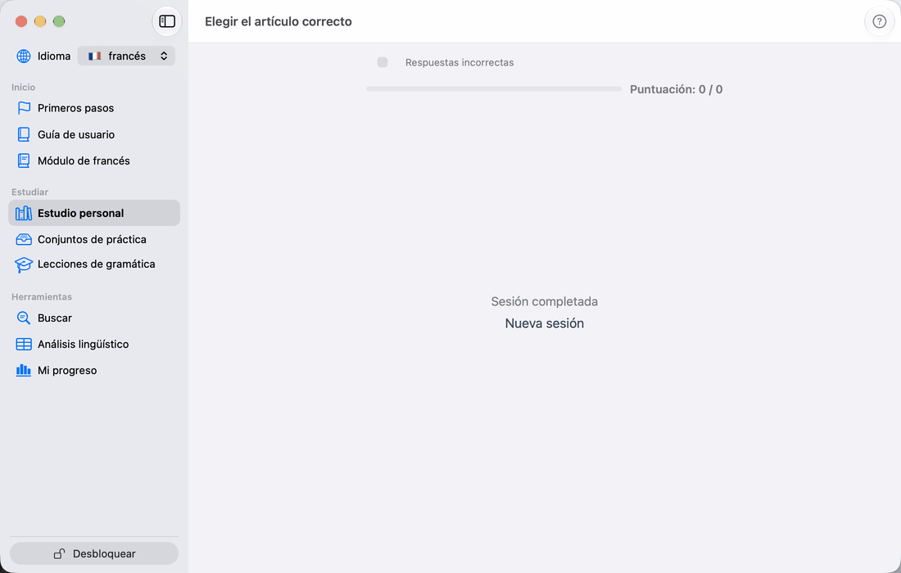
Se muestra un sustantivo sin su artículo. Toca le o la. La tarjeta destella en verde o en rojo y se gira para mostrar el sustantivo con su artículo y su traducción. Tras un acierto, el siguiente sustantivo aparece solo, salvo que Avance automático tras respuesta correcta esté desactivado en Ajustes → Estudiar; tras un fallo, la tarjeta se queda hasta que tocas Siguiente. El botón de altavoz lee el sustantivo en voz alta.
- Los sustantivos proceden de tu selección. Se excluyen los sustantivos de más de una palabra y los terminados en -s.
- En un sustantivo que admite ambos géneros (élève), cualquiera de las dos respuestas es correcta, y la tarjeta lo indica.
- Cada sustantivo se pregunta una vez por sesión. La línea superior muestra tu puntuación hasta el momento ("6 de 8 correctas") y cuántos sustantivos son candidatos.
- Respuestas incorrectas limita la sesión a los sustantivos cuyo género has fallado.
¿Qué artículo?
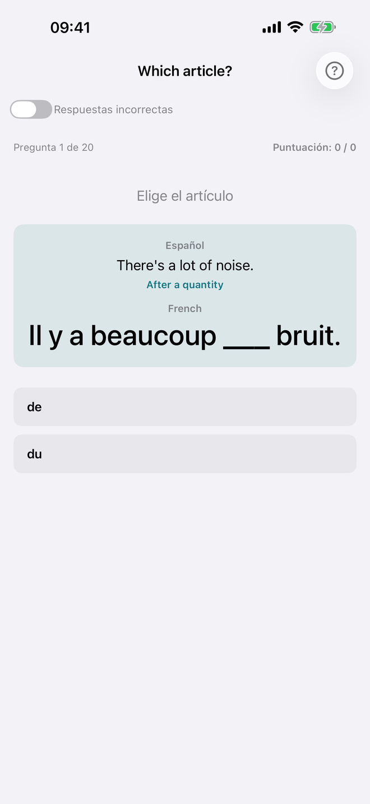
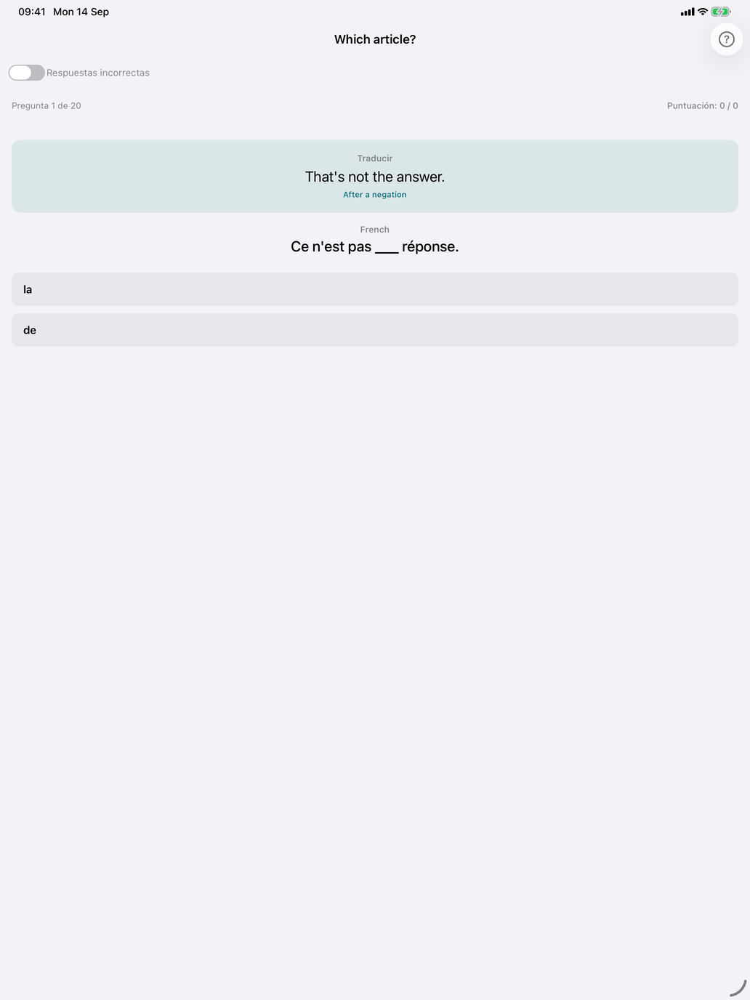
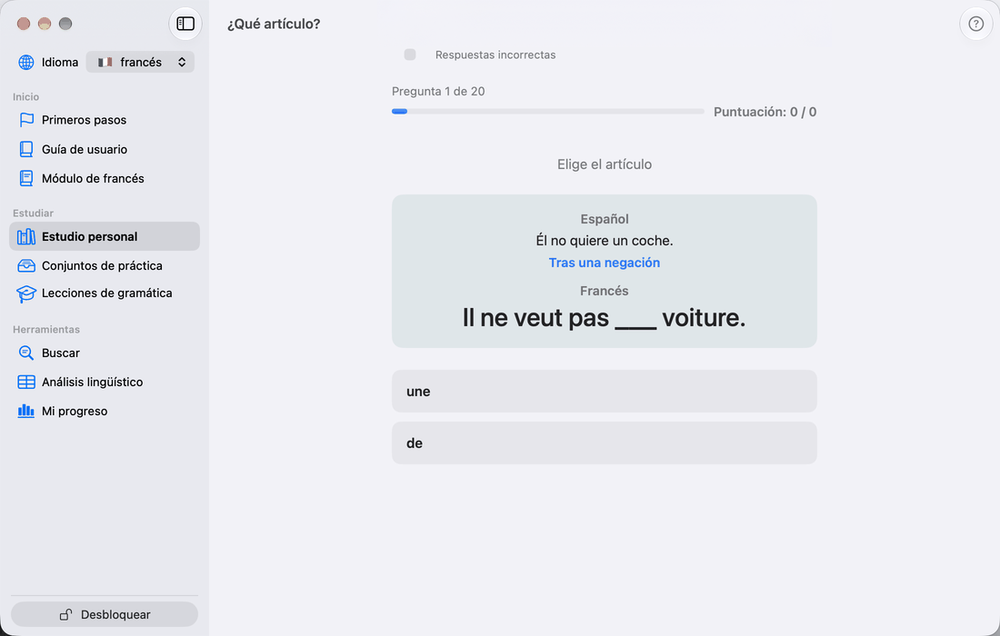
¿Qué artículo? plantea una pregunta distinta de Elegir el artículo correcto. Aquel ejercicio pregunta qué artículo lleva un sustantivo. Este pregunta qué artículo necesita una oración — y el sustantivo por sí solo no te lo dice: le café y du café son ambos francés correcto.
Cada pregunta muestra una oración en inglés con una etiqueta que nombra la regla, y la oración francesa con un hueco. Toca uno de los dos artículos; el hueco se rellena, se marca la respuesta correcta y una tarjeta ¿Por qué …? explica la regla. Toca Siguiente para continuar (Ver resultados después de la última).
Las oraciones abarcan seis reglas:
- After a negation — el partitivo y el artículo indefinido se convierten en de solo: je ne mange pas de pain, nous n'avons pas d'enfants. Después de être no: ce n'est pas la réponse.
- After a quantity — beaucoup de, un kilo de, un peu de llevan de solo: un peu de lait, pero ajoute du lait.
- The verb decides — los verbos de gusto llevan el artículo definido (j'aime le café); los verbos de comer, beber y comprar llevan el partitivo (je bois du café).
- Countable or not — j'ai mangé un gâteau (un pastel entero) frente a j'ai mangé du gâteau (algo de pastel).
- Plural — j'achète des pommes (unas manzanas) frente a j'aime les pommes (las manzanas en general).
- A specific thing — la función habitual del artículo definido: ferme la porte, la France.
El ejercicio tiene su propio conjunto fijo de oraciones e ignora tu selección de sustantivos. Tus respuestas se registran por regla, así que la regla en la que más fallas vuelve a aparecer con más frecuencia. La duración de la sesión sigue Preguntas por sesión (con ∞, una sesión tiene como máximo 50 preguntas).
Singular / Plural
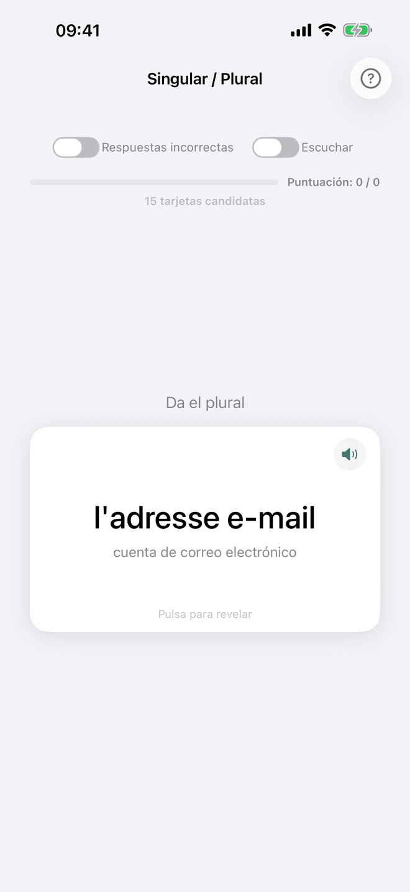
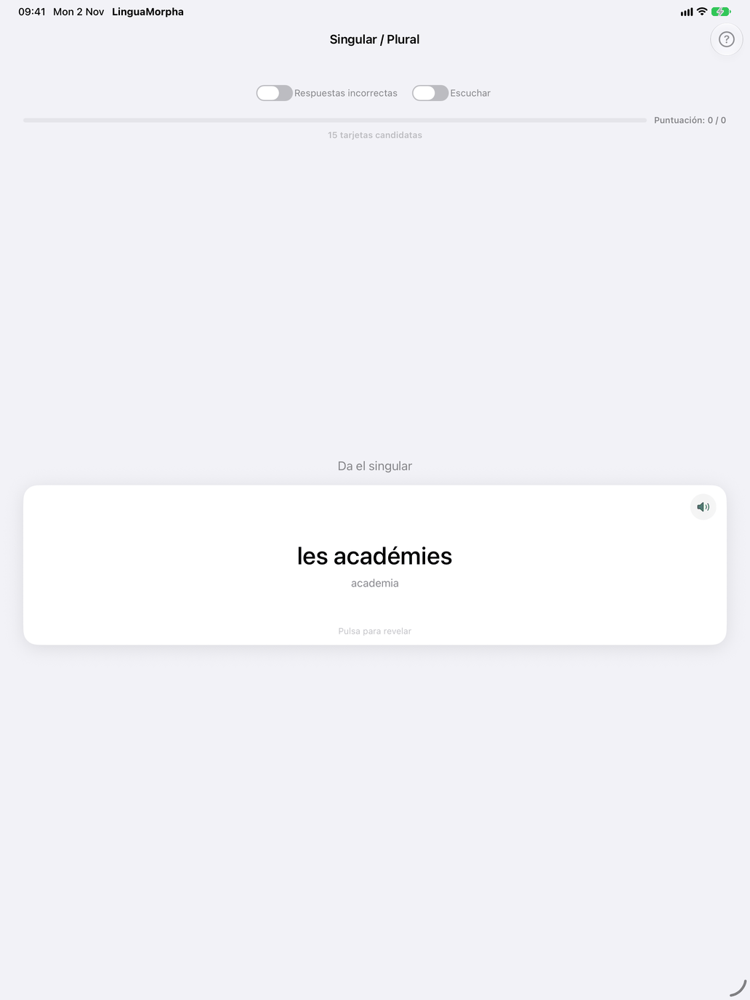
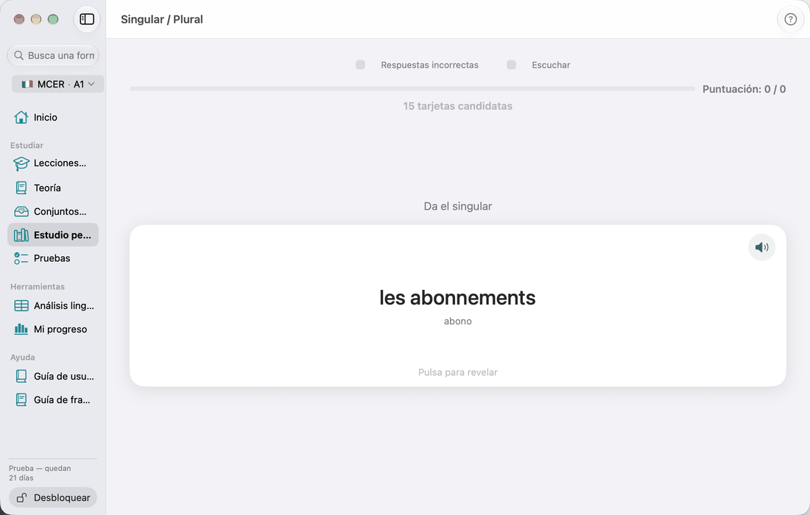
Un ejercicio de tarjetas para los plurales. La tarjeta muestra un sustantivo con su artículo y su traducción, y pide Da el plural (le cheval → les chevaux) o Da el singular; la dirección se elige al azar en cada tarjeta. Dale la vuelta a la tarjeta y márcate la respuesta como correcta o incorrecta, igual que en Significado del sustantivo.
Los sustantivos proceden de tu selección, pero solo se usan los que tienen singular y plural normales: se excluyen los sustantivos de masa, los plurale tantum y los invariables. Si no queda ninguno, el ejercicio lo indica y ofrece Seleccionar ámbito.
Pares de género alternativo
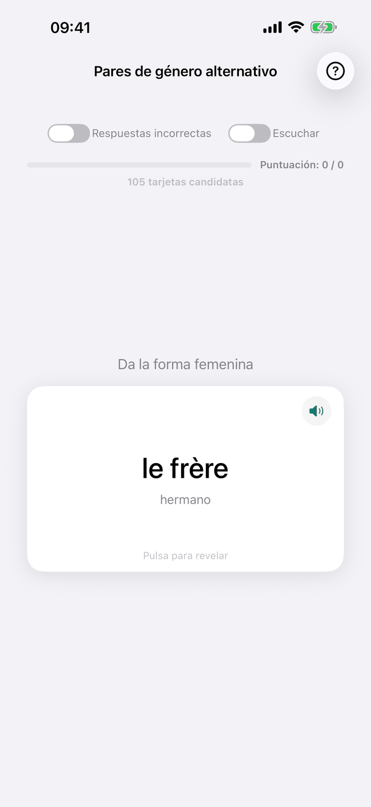
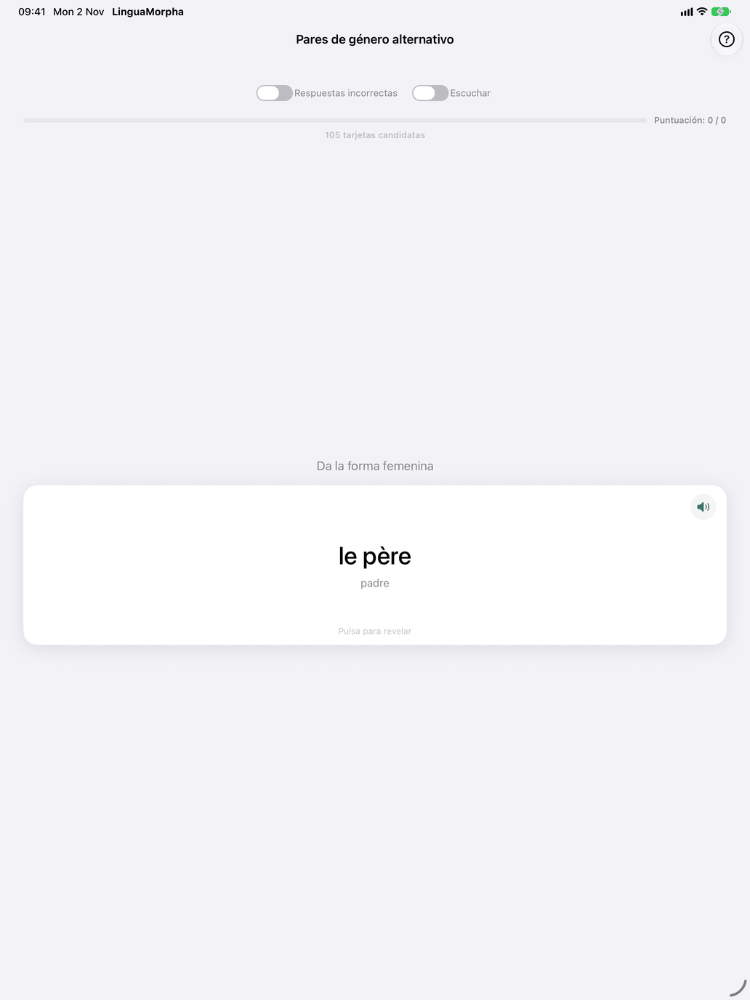
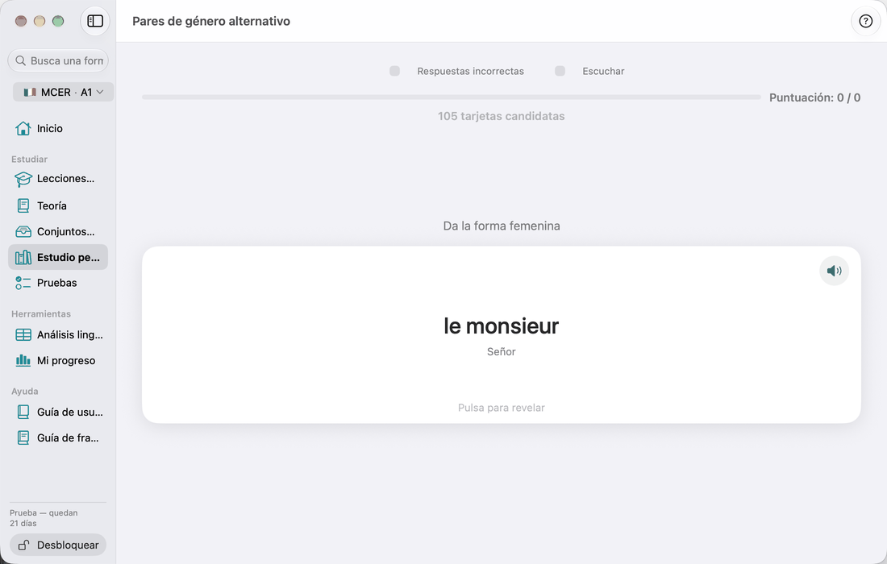
Un ejercicio de tarjetas para los sustantivos que tienen forma masculina y femenina. La tarjeta muestra una forma con su artículo y su traducción, y pide Da la forma femenina (le boulanger → la boulangère) o Da la forma masculina. Dale la vuelta a la tarjeta y márcate igual que en Significado del sustantivo.
El ejercicio usa todos esos sustantivos — los del grupo Par M/F y los sustantivos cuyo significado cambia con el género (le tour → la tour, donde la traducción de cada cara muestra el cambio) —, sea cual sea tu selección. El artículo se elide cuando es necesario: l'ami → l'amie.